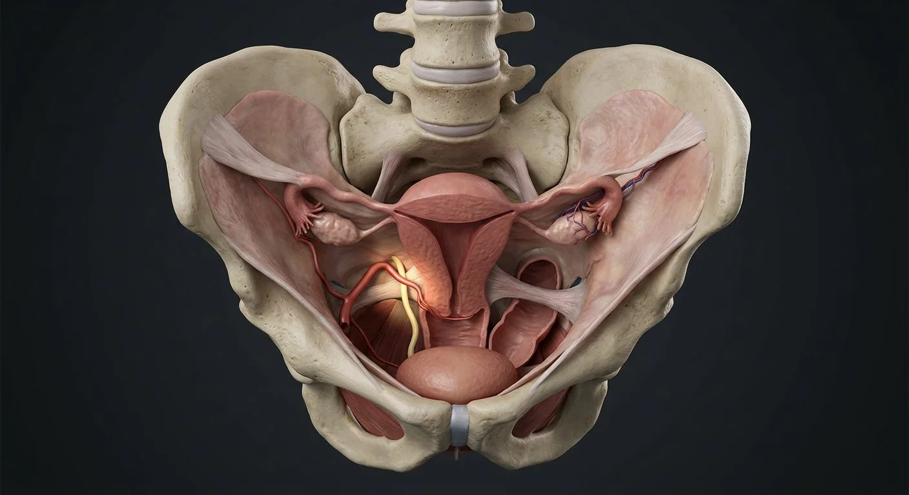

Round ligamentMesometriumVesico-uterine pouchUterine arteryCardinal ligamentInferior hypogastric / uterovaginal plexusArcus tendineus fascia pelvisDistal ureterPubocervical fasciaLevator aniMesosalpinxBroad ligamentInfundibulopelvic (suspensory) ligamentMesovariumOvarian ligamentRecto-uterine pouch (Douglas)Uterosacral ligamentsRectovaginal fasciaObturator internus fasciaPerineal body central tendon- 01Broad ligament
- 02Mesometrium
- 03Mesosalpinx
- 04Mesovarium
- 05Round ligament
- 06Ovarian ligament
- 07Infundibulopelvic (suspensory) ligament
- 08Cardinal ligament
- 09Uterosacral ligaments
- 10Pubocervical fascia
- 11Rectovaginal fascia
- 12Levator ani
- 13Uterine artery
- 14Distal ureter
- 15Vesico-uterine pouch
- 16Recto-uterine pouch (Douglas)
- 17Inferior hypogastric / uterovaginal plexus
- 18Arcus tendineus fascia pelvis
- 19Perineal body central tendon
- 20Obturator internus fascia
How this part of the body works
Study true support separately from peritoneal reflections. This realistic pelvis plate shows why the ureter and arteries demand a careful surgical plane.
Read the anatomy, part by part
These 20 structures describe anatomy related to the chapter’s regional illustration. Each entry separates location, function and a clinical point.
Broad ligament
Double peritoneal sheet draped over uterus, tubes and associated structures.
What it doesSupports relationships but is not the main mechanical uterine support.
Clinical connectionUreter and uterine vessels course at its base.
Mesometrium
Largest sheet of broad ligament lateral to uterus.
What it doesConveys uterine vessels and connective tissue in base.
Clinical connectionSurgical dissection exposes adjacent ureter.
Mesosalpinx
Broad ligament portion related to uterine tube.
What it doesSupports tube and its vessels.
Clinical connectionTubal surgery separates this vascular fold.
Mesovarium
Short fold suspending ovarian hilum from posterior broad ligament.
What it doesTransmits vessels to ovary.
Clinical connectionDistinct from the suspensory ovarian ligament.
Round ligament
Band from uterine cornu through inguinal canal to labium majus.
What it doesHelps maintain anteversion; not principal apical support.
Clinical connectionRelevant to round-ligament pain and inguinal surgery.
Ovarian ligament
Cornu-to-ovary band medial to ovarian hilum.
What it doesAnchors ovary toward uterus.
Clinical connectionDifferent from suspensory ligament carrying ovarian vessels.
Infundibulopelvic (suspensory) ligament
Ovary-to-sidewall peritoneal fold with ovarian vessels.
What it doesConduit for ovarian artery, vein, nerves and lymph.
Clinical connectionLocate ureter before pedicle division.
Cardinal ligament
Transverse cervical connective tissue to pelvic sidewall.
What it doesImportant apical support with uterine artery/vein.
Clinical connectionUreter passes nearby under the uterine artery.
Uterosacral ligaments
Bands from posterior cervix/vagina to sacrum.
What it doesPosterior apical support.
Clinical connectionDeep infiltrating endometriosis can involve this region.
Pubocervical fascia
Anterior connective tissue supporting vaginal wall and bladder.
What it doesAnterior compartment support.
Clinical connectionFascial defects are associated with anterior prolapse.
Rectovaginal fascia
Connective tissue between posterior vagina and rectum.
What it doesSeparates posterior compartment.
Clinical connectionA plane important in endometriosis and prolapse surgery.
Levator ani
Puborectalis, pubococcygeus, iliococcygeus under pelvic organs.
What it doesSupports pelvic organs and maintains anorectal angle.
Clinical connectionAvulsion and weakness may contribute to prolapse.
Uterine artery
Tortuous internal iliac branch entering cervix in cardinal ligament.
What it doesSupplies uterus; anastomoses with ovarian artery.
Clinical connection“Water under the bridge”: artery crosses above ureter.
Distal ureter
Runs along pelvic sidewall then beneath uterine artery near cervix.
What it doesDelivers urine to bladder.
Clinical connectionIdentify and protect during hysterectomy.
Vesico-uterine pouch
Anterior reflection between bladder and uterus.
What it doesMobile peritoneal recess.
Clinical connectionBladder-flap dissection relates to this plane.
Recto-uterine pouch (Douglas)
Posterior peritoneal recess between uterus and rectum.
What it doesLowest intraperitoneal space when upright.
Clinical connectionPelvic fluid may collect here.
Inferior hypogastric / uterovaginal plexus
Autonomic fibers around lateral cervix/vagina.
What it doesBladder, rectal and genital organ function.
Clinical connectionNerve-sparing planes reduce postoperative dysfunction.
Arcus tendineus fascia pelvis
Fascial thickening from pubis toward ischial spine along obturator internus fascia.
What it doesSupports lateral vaginal fascial attachments.
Clinical connectionDetachment can contribute to paravaginal defects.
Perineal body central tendon
Fibromuscular node between distal vagina and anal canal.
What it doesAnchors perineal muscles and pelvic-floor fibers.
Clinical connectionDisruption may weaken distal pelvic support.
Obturator internus fascia
Fascial layer over pelvic sidewall muscle contributing to support attachments.
What it doesProvides anchoring plane for pelvic fascia.
Clinical connectionLateral dissection risks nearby neurovascular structures.
Five questions about Pelvic support & surgical planes
Short answers grounded in the structures described above. Use the illustrated guide for anatomical context.
What is the difference between the broad ligament and pelvic support ligaments?
The broad ligament is a peritoneal fold. Cardinal and uterosacral connective tissues, together with pelvic-floor muscles, contribute substantially to uterine support.
Why is the ureter important in pelvic surgery anatomy?
The ureter travels near the uterine artery and cervix. Understanding their relationship helps explain why surgical planes require careful identification.
What is the broad ligament?
Double peritoneal sheet draped over uterus, tubes and associated structures. Function: Supports relationships but is not the main mechanical uterine support.
Where is the mesosalpinx located?
Broad ligament portion related to uterine tube. Function: Supports tube and its vessels.
What is the function of the round ligament?
Function: Helps maintain anteversion; not principal apical support. Band from uterine cornu through inguinal canal to labium majus.
Related anatomy guides
Follow these connected structures and body systems in the illustrated atlas.
 Uterus — layers & cavityThe womb in cross-section: endometrium, junctional zone, myometrium, cavity, isthmus and the key clinical boundaries.↗
Uterus — layers & cavityThe womb in cross-section: endometrium, junctional zone, myometrium, cavity, isthmus and the key clinical boundaries.↗ Ovary & uterine tubeFrom follicular cortex to ampulla: the ovary, fimbriae, tubal mucosal folds and the hidden routes of fertilization.↗
Ovary & uterine tubeFrom follicular cortex to ampulla: the ovary, fimbriae, tubal mucosal folds and the hidden routes of fertilization.↗ Vagina — walls & fornicesA layered fibromuscular canal: rugae, muscularis, fornices, vestibular opening, adjacent urethra and rectum.↗
Vagina — walls & fornicesA layered fibromuscular canal: rugae, muscularis, fornices, vestibular opening, adjacent urethra and rectum.↗ Female pelvis & perineumThe female pelvic floor in sagittal section: bladder and urethra, vagina and anteverted uterus, rectum behind — plus the ligaments and pouches that position them.↗
Female pelvis & perineumThe female pelvic floor in sagittal section: bladder and urethra, vagina and anteverted uterus, rectum behind — plus the ligaments and pouches that position them.↗Further reading
General anatomy references and related source chapters for continued study. These links do not make the digital illustrations clinical images or certify every anatomical variant.
This educational page is not medical advice and has not undergone formal clinical peer review. Spotted an error? Contact the editor.
Open the realistic interactive plate, label lines, focus view and self-test.